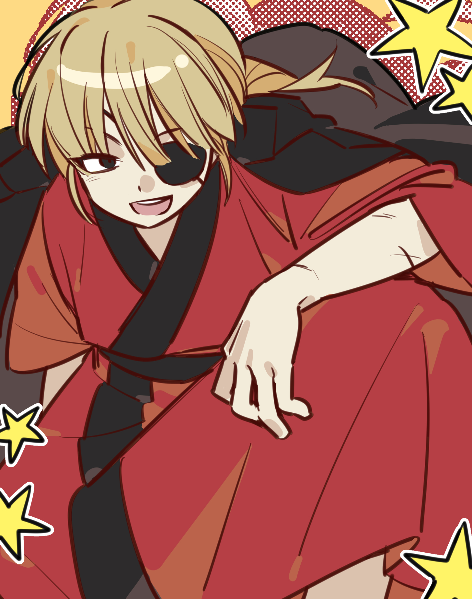

히이라기 카이

몸무게 69kg
발사이즈 270mm
요시다 쇼요의 2번째 제자
소나무 공인중개사 사무소 소장
국가공인 대규모 토목사업 고문관
[ 가족관계 펼치기 • 접기 ]
母 마영위
개요
그런 건 전혀 중요하지 않아. 사람을 살면서 수도 없이 실수를 하고 수 없이 이를 반복하지. 우리는 그런 과거를 뉘우치고, 또다시 잊어버리고. 수도 없이 많은 시간을 버려. 그리고 그 시간에 함께 있는 사람을 마주하는거다! 그렇게 너만의 단 한 사람을 찾아내서, 네 모든 걸 그 사람에게 주기로 해. 그러니 어서 가라! 너의 버려진 시간에 대해 그 누구보다 잘 아는 이를 찾아가! 분명 그 끝에는 이 세상에 대한 해답이 존재할 테니까!
은혼 낙양결전편
만화 <은혼>의 등장인물.
상세
과거 사카타 긴토키와 함께 활약했던 양이지사 간부들 중 한 명. 양이 사천왕에는 끼지 못했으나 요시다 쇼요의 4제자라는 이름으로 유명세를 떨쳤다.
표준어를 사용한다. 1인칭은 보쿠와 지분. 간간히 오레를 사용한다. 이 탓에 과거 회상씬에서 카이를 남성으로 착각하는 경우가 많은데, 이는 남장 시절의 버릇이 그대로 남아있는 탓에 인칭을 바꾸지 않는 것이다.
20여년 전 에도의 유명한 가부키 배우였던 히이라기 우메히의 독녀. 말이 유난히 거칠다. 요시다 쇼요의 제자로 선생님을 구하기 위하여 전쟁에 참전하였다. 당시 별명은 부동여래차사. 이는 밀교의 명왕 중 하나인 부동명왕에서 따온 것인데, 번뇌의 악마를 응징하고 수행자를 수호하는 부동명왕의 모습과 비교해보면 어울리는 별명이기도 하다. 전쟁 때는 혈귀라는 이름으로도 불렸을만큼 쾌검을 구사하나 언월도와 같은 무거운 무기들을 쓰는 것으로 보아 그 힘이 대단한 것으로 보인다.
양이전쟁이 끝난 후 감옥에 갔다가 아사에몬의 도움으로 풀려난 후, 여기 저기 알바를 하며 떠돌던 중 우연히 산 복권이 당첨되어 10억엔 가량을 수령했다. 이후 자신이 장사에 수완이 있다는 것을 깨닫고 에도의 몇몇 부지들을 사들였는데, 그곳에 터미널이 건설되며 천문학적인 금액을 벌어들였다. 이후 가부키초 1번지에 공인중개사 사무소를 차려 6명의 직원들과 일하는 중이다.
외모
양이전쟁과 어린 시절의 모습은 대부분 짧을 머리를 하여 성별이 긴가민가 하다. 목소리도 여캐들 중 가장 낮은데다가 선이 짙은 얼굴이라 과거모습만 보면 소년으로도 오인할 수 있는 외모. 당시에는 두 눈이 멀쩡했으며 현재보다 조금 더 차갑고 더러운 인상을 가지고 있다.
현재는 왼쪽 눈에 안대를 끼고 머리를 짧게 묶은 꽁지머리를 했다. 빨간 기모노를 입고 어깨에 검정색 코트를 걸친 것이 보통의 모습이다. 양 팔 동맥 밑에 징벌할 징 자 의 한자가 새겨져 있으며 슬렌더 체형에 큰 키를 가지고 있다.
성격
이정도라고? 싶을 정도로 꼬인 성격을 가지고 있다. 자주 언급되는 인물은 거침없이 하이킥의 이순재. 자기 주장이 강하고 뜻을 잘 굽히지 않는다. 말을 중간에 많이 생략해서 그렇지 대부분의 경우 카이의 판단이 옳을 때가 많다. 표정은 항상 무뚝뚝해 표현을 잘 하지 않는다.
기본적으로 천성이 그리 착한 편은 아니다. 종족 특성 상 호전적임을 타고 나서인지 타인과의 싸움을 즐기는 모습을 보이며, 남들의 위에 서는 것을 선호한다. 또한 양심보다는 이익을 추구하는 제법 현실적인 성격. 그러나 친구와 동료를 소중히 생각하고 있으며 어지간한 이가 아니면 쉽사리 내치지 않는 스타일이다. 평소엔 무작정 화를 내고 보지만 정말 화가나면 차분해지며 단조로운 어조를 쓰는 것이 특징.
화내는 모습이나 감정을 드러내는 모습들은 몇 번 보이나 환하게 웃는 모습은 그다지 많이 않다. 예외로 2기에서 타츠마와의 에피소드와 극장판 더 파이널에서 타츠마에게 두 번째 프러포즈를 받았을 때 보기 드물게 환한 웃음을 보여주었다.
쇼요가 죽은 후로 무너진 서당즈만큼 무너진 것 역시 카이인데, 실제로 자살시도를 하다가 인사하러 온 타츠마와 마주쳐 이를 저지 당하는 모습도 보였다. 허나 이는 쇼요를 향한 비뚤어진 집념에서 비롯한 무너짐이지 실제로는 은혼에서도 손꼽힐 만큼 단단한 멘탈을 가진 인물. 타츠마가 부상 당해서 왔을 때도 눈 깜짝 하지 않고 적을 해치우기 바빴다. (이후 바토우를 만났을 때에 그를 죽이려 들었을 만큼 앙금이 큰 것을 보면 포커 페이스에도 능한 듯 보인다.)
평소에는 지나가는 사람에게 시비를 걸거나 진선조 유치장 안에서 발견 되곤한다. 그냥 아무 이유 없이 모두와 싸우고 다니는 것을 즐기는 악취미가 있으며, 반응이 잘 오는 사람을 선호해 히지카타가 그 대상이 될 때가 많다. 본인은 이런 취미가 있는지 잘 모르는 것 같다. 도S 여자라는 공식 설정이 존재하는데 정작 타츠마와는 플레이를 즐기지 않는 모습을 보인다.
미남 미녀를 좋아하며 이들을 모아 목록을 만드는 괴상한 취미가 있다. 주로 선호하는 쪽은 긴 머리를 가진 가는 선의 미인. 남녀를 가리지 않고 있으며 카츠라 코타로 역시 이 목록에 있는 것을 보아 호감이 있는 것이 아닌 미술품을 감상하듯 미인들을 감상하는 취미가 있는 듯 하다.
이런 이상한 모습들과는 별개로 손익 계산 및 선구안이 뛰어나 단순히 1년 후가 아닌 장기적인 미래를 보고 투자하는 것에 능숙하다. 막부 및 타 행성에서도 외주를 맡길 만큼 여러 방면에서 뛰어난 인재라고 할 수 있다. 양이 전쟁 당시에도 카츠라 코타로와 함께 참모 역할도 했었다. 다만 사람의 마음을 돌리는 타입이라기 보다는 신뢰가 가는 작전들로 포섭하는 편. 비슷한 역할을 하는 타츠마와는 정 반대의 행보를 보여준다.
하지만 공인중개사 직원들과는 특별한 인연을 맺었기 때문인지 직원들은 카이 자체를 좋아하고 잘 따른다. 여자 교도소에서 수감되었던 범죄자나, 2D 미연시 중독 히키코모리, 가문에서 제적 당한 도련님, 권고 사직을 받은 노년의 노인까지 남녀노소를 가리지 않고 사람을 모아 꾸린 사무소이다. 본인은 이익을 봤다고 생각하는 것 같지만 정작 직원들은 카이에게 받은 것이 많다고 생각하는 일종의 착각계 모먼트를 보여주기도 한다.
전투력
뭐? 혼자 보내도 되겠냐고? 올해 들어본 말 중 제일 어이없군.
저 녀석을 상대할 수 있는 놈은 이 지구에 없어.
은혼 5기 사카타 긴토키
과거엔 전쟁이 일상이었던 터지만 현재는 그럴 일이 잘 없어 도드라지게 무력을 보이지 않는다. 허나 요시다 쇼요 및에서 동문수학했던 서당즈와 지나가는 대사들을 생각해보면 그 무위를 충분이 짐작할 수 있을 정도다. 또한 전투씬에서 등장하는 전투 센스와 타고난 힘, 그리고 격투술을 생각해보자면 은혼 작중에서도 손꼽히는 강자임이 틀림 없다.
장군 암살편에서 홀로 야토들을 상대했을 정도로 정말 괴물 같은 무위를 보여준다. 내공을 단련한다면 순식간에 성장할 수 있는 무원족의 특성을 생각해본다면 이상한 일은 아니다. 근 10년간 전투할 일이 적었다고는 하나 근래에 긴토키와 엮이며 과거의 기량이 다시 살아나고 있어 홀로 노련한 검수 백 명은 상대 할 수 있을 정도의 무위. 야토족과 싸우는 모습에서 중반까지 오른손만 사용하며 여유로운 모습을 보인다.
이후 낙양결전 편에서 무원성의 지배계층인 심천마가의 마영위와 겨룰 때도 전혀 흔들림 없는 모습을 보여주었다. 물론 마영위는 몇 백년을 살아왔으며 카이가 얻은 내공 비급의 출처 대부분이 마영위인 것을 생각하면 지는 것은 어쩔 수 없는 일이었다. 허나 장수하는 무원족의 특성상 카이의 나이는 아직 갓 태어난 신생아 수준에 가까우며 앞으로 무궁무진한 성장 가능성이 있음을 고려하자면 우츠로와도 검을 겨룰 수 있을 정도의 강자가 된다 해도 무리는 아니다. (하지만 마영위조차 우츠로와 싸웠을 때에 전력에 큰 손실을 입었다.)
은빛 영혼편에서 바토우와 대치하는데 순식간에 그를 제압하고 죽이려 드는 모습을 보인다. 허나 그가 필요한 전력임을 깨닫고 “네 수명은 이 일이 해결될 때 까지다. 그 이후부터는 네 사지를 잘라 온 우주에 던져 놓지.” 라고 말하며 과거 사카모토와의 일에 대해 극도로 격노하는 모습을 보인다. 하루사메의 2단장인 바토우를 순식간에 제압에 목까지 내놓게 할 수 있는 것을 보여주며며 강자의 입지를 다시 한 번 확인 시켰다. 또한 폭발에 휘말려 죽기 직전의 바토우를 자신의 손으로 직접 수십 번을 찌른 것을 보아 사카모토 일에 대한 원한이 굉장히 큰 듯 하며, 그가 사카모토가 아닌 긴토키에게 더 집중하고 있었다는 사실을 깨닫고 크게 분노한다.
과거와 현재 모두 상위권에 꼽히는 굉장한 강자. 다만 주인공인 긴토키와는 직접적 대치를 하지 않아 실력을 가늠하기 어렵다는 평가도 있었으나 그 출생이 밝혀지고 난 후로는 충분히 긴토키와 겨루어도 꿇리지 않을 거라는 평가가 있다. 다만 주인공 원톱 만화 특성 상 그정도로 비등할 것 같진 않다고 판단 되기도 한다. 실제로 카이는 기술보다는 조준이나 힘에 초점을 맞추어 일격에 공격을 끝내는 경우가 잦았다.
검 말이냐? … 더이상 난 검으로 싸우지 않아. 물론 그것을 놓았다는 말은 아니야.
내 인생의 대부분을 검과 함께 하였으니. 하지만 이제 누군가의 피로 남을 지키고 싶지않아.
검이 아닌 내 무사도로 사람들을 지키는 거야.
그것이 내가 발견한 새로운 정의다.
은혼 5기 사카타 긴토키
대부분의 장면에서는 조력자 역할로 나오기에 검을 쓰는 에피소드는 크게 있지 않으나 나올 때마다 큰 임팩트를 주고는 한다. 평소 검을 가지고 다니지 않는 이유는 검이 없어도 충분히 제압할 정도의 실력 때문임과 동시에 사카모토 타츠마가 그닥 좋아하지 않기 때문이라는 말을 꺼낸 적이 있다. 이를 보아 타츠마의 영향을 꽤 받은 것으로 보이며 후일 둘의 관계가 발전 하는 것을 염두해두면 딱히 이상할 일은 아니다.
까탈스러운 성격 때문에 가려져 있으나 은근 인품 좋은 편이라 오래 만난 이들에게 큰 신뢰를 받는 것이 진면모다.
작중 행적
자세한 내용은 히이라기 카이/작중 행적 문서를 참고하십시오.
대인관계
사카타 긴토키와는 쇼요에게 함께 주어진 제자. 가장 비슷한 상황에 처했었고 막 살다가 무슨 일이 생기면 성격이 180도 돌변하는 것 역시 비슷하다. 그러나 둘의 사이는 그다지 좋지 않은 듯 하다. 일종의 동족 혐오가 가까운 듯. 서로 성격이 별로 안좋다고 생각하고 있다. 남매로도 분류 가능한 사이지만 그렇게까지 가깝지도 멀지도 않은 사이. 다만 오랜시간 알아온 만큼 상대에 대해 아는 것이 많다. 가령 카이가 브로콜리만 보면 하나하나 쪼개본다던지 하는 것들.
여담
후술
어록
니 얼굴.
네 얼굴에 마다오라고 적혀있다.